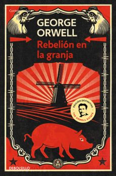
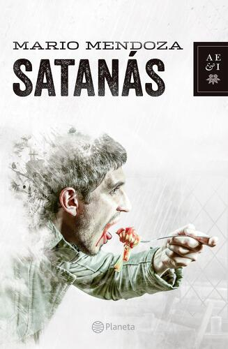

rebelion en la granja
Los animales de la Granja Manor, hartos del maltrato y los abusos del dueño alcohólico, el señor Jones, se rebelan inspirados por los ideales de un viejo cerdo llamado Viejo Mayor.

Crimen y castigo
Crimen y castigo es una novela psicológica escrita por el autor ruso Fiódor Dostoyevski y publicada en 1866. La historia se desarrolla en San Petersburgo durante el verano.

Satanás
Satanás (publicada en 2002 por Editorial Planeta) es una novela del escritor colombiano Mario Mendoza que explora la presencia del mal en la vida cotidiana de Bogotá.